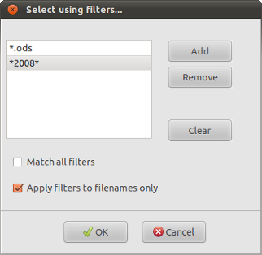

| Prev | Home | Next |
Individual files can be selected for restoration by left-clicking on them with the mouse. You can select multiple files for restoration this way by holding down the Ctrl key while left-clicking on them. Groups of files or directories can be selected by holding down the Alt key while left-clicking.
If an unexpanded directory is selected (ie: the directory contents are hidden) then all its contents will also be selected. However, if its contents are visible then only the directory itself will be selected, allowing you to choose which of its contents you want to restore.
The number of nodes currently selected is shown in the status bar at the bottom of the DarGUI main window.
Right-clicking over the archive contents pops up a context menu which allows you to restore selected items or the entire archive.This menu has the following options:
Restore selected - restore all the files which have been selected.
Restore all - restore all files from the archive.
Toggle selected - reverse the current selection. All the files which are unselected at the moment will be selected and visa versa. A useful option if there are a few files that you want to exclude quickly.
Select by filter -
This enables you to
select all files in the archive which match a filter or combination of
filters. The following window will appear:

Filters can be added or removed using the appropriate buttons. The "Clear" button will remove all filters.
Match all filters - if this option is selected then a file will be selected only if it matches all the filters in the list. When "Match all filters" is not selected then a file will be selected if it matches any one of the filters.
Apply filters to filenames only - If this option is not selected then a file will be selected if the filter matches to its name or to its path.
Show selected - files selected using "Select by filter" or "Toggle selected" are not shown automatically. Use this option to see all the currently selected files.
Show all - expand the display to show all the files in the archive.
Hide all - hide the contents of the archive.
Restore files to - select the directory into which you want to extract the files.
Existing files - dar will do one of three things when it finds existing files of the same name:
Test run only - dar will display messages as if it was extracting the selected files but the files will not really be extracted.
Ignore directories - the directory structure of the archive will be ignored and all files will be extracted into the same directory.
| Prev | Home | Next |
| Viewing files | Up | Isolating catalogs |